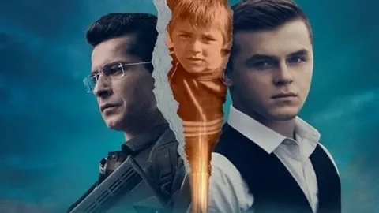
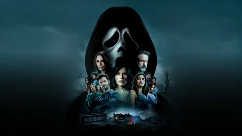
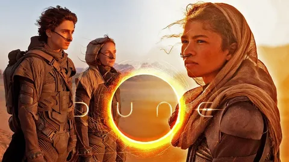

-

KESİŞME: İYİ Kİ VARSIN EREN
Filmin Konusu
Kesişme; İyi ki Varsın Eren, Trabzon Maçka'da teröristlerle kahraman Mehmetçiğin çatışması sırasında hayatını kaybeden Eren Bülbül ve onu korumaya çalışırken şehit olan Astsubay Kıdemli Başçavuş Ferhat Gedik’in hayat hikayesini konu ediyor.
Filmin Oyuncuları
Rahman Besel ---> Eren Bülbül
Azer Selte ---> İsmail
Murat deniz ---> Semih
İsmail Hacıoğlu ---> Ferhat Gedik
Kamala İsrafilova ---> Havin
Mahmud Kasalkheh ---> Terörist
Okan Kayabaş ---> Reşat
Mutlunur Lafçı ---> Ayşe Bülbül
Emre Yılmaz ---> Orhan
Onur Çırak ---> İstihbarat Astsubay
Alayça Öztürk ---> Cemile Gedik -

IM WESTEN NICHTS NEUES
Filmin Konusu
I. Dünya Savaşı sırasında bir erkek lisesinde öğretmenlik yapan militarist Profesör Kantorek, öğrencilerinin asker olarak savaşta yer almasının son derece onurlu olduğu propagandasını ateşli bir söylemle yapar. Bu etkileyici konuşmadan sonra öğrenciler gönüllü askere yazılarak Alman ordusuna katılır. Ailesinin askere katılmasına izin vermediği, reşit olmayan Paul’u (Felix Kammerer) arkadaşları alaya alıp dışlar. 17 yaşındaki Paul arkadaşlarının kışkırtmasıyla izin kâğıdına annesinin imzasını taklit ederek askere gönüllü yazılır. Ancak cepheye sürüldüklerinde, deneyimsiz gençler savaşın öğretmenlerinin anlattığı türde bir olay olmadığını görür. Acemi askerler bu yanılgının farkında olsalar da artık geriye dönmeleri mümkün değildir. Komutanın emriyle, yağan yağmurla çamur deryası içindeki siperlerden çıkıp, kurşun ve top ateşi altında hayatta kalıp düşmanla savaşmaları gerekmektedir. Tüm toyluklarıyla olup biten siyasi oyunların ve acımasız planların gölgesinde ölüm kalım savaşını sürdüreceklerdir. İlk günlerde coşkuyla siperlerde yer alan Paul ve sınıf arkadaşları, savaş devam ettikçe kendilerini korku ve büyük bir çaresizliğin içinde bulur.
Filmin Oyuncuları
Felix Kammerer ---> Paul Bäumer
Daniel Brühl ---> Matthias Erzberger
Albrecht Schuch---> Stanislaus
Aaron Hilmer ---> Albert Kropp
Devid Striesow ---> General Friedrich
Edin Hasanovic ---> Tjaden Stackfleet
Anton von Lucke ---> Hauptmann Von Helldorf
Sebastian Hülk ---> Major Von Brixdorf -

SCREAM 5
Filmin Konusu
Scream filminin beşinci devam halkası olan yapımda, bir dizi korkunç suçu kimin işlediğini bulmak için memleketine geri dönen bir kadının hikayesini konu ediyor. 25 yıl önce korkunç cinayetlerle çalkalanan Woodsboro kasabası, yeni bir katille karşı karşıyadır. Hayalet maskesini takan katil, kasabanın kanlı geçmişine ait sırları yeniden canlandırmak için bir grup gencin peşine düşer. Sidney, yıllar önce başından geçenlere benzer seri cinayetleri çözmek için ayrıldığı Woodsboro kasabasına geri döner.
Filmin Oyuncuları
Jenna Ortega ---> Tara Carpenter
Melissa Barrera ---> Sam Carpenter
Mikey Madison Amber ---> Freeman
Neve Campbell Sidney ---> Prescott
Courteney Cox Gale ---> Weathers
Skeet Ulrich Billy ---> Loomis
Jack Quaid Richie ---> Kirsch
Dylan Minnette ---> Wes Hicks -

DUNE
Filmin Konusu
Uzak bir gelecekte geçen "Dune", ailesi çöl gezegeni Arrakis’in kontrolüne sahip olan Paul Atreides’in hikayesini anlatıyor. Galaksinin farklı noktalarındaki gezegenler, rakip feodal aileler tarafından yönetilmektedir. Çok değerli bir kaynağın tek üreticisi olan çöl gezegeni Arrakis'in kontrolü asil aileler arasında son derece talep görmektedir. "Baharat" adı verilen bu kaynak, yüksek bilinç ve uzun bir yaşam süresi sunarken, beraberinde çok ciddi yan etkileri de getirmektedir. Ayrıca yıldızlararası yollarda gezinmeye yardımcı olan kaynak da bu "baharat"tır. Bu kaynağı elde etmek isteyen feodal rakiplerden Harkonen ailesi tarafından Paul ve ailesine tuzak kurulur. Bu tuzağın sonucunda Paul'un ailesi darmadağın olarak firari hale gelir. Paul, ailesinin Arrakis kontrolünü yeniden kazanması için bir isyan başlatırken, tüm evrenin seyrini değiştirebilme ihtimalini yakalayacaktır.
Filmin Oyuncuları
Timothée Chalamet ---> Paul Atreides
Zendaya ---> Chani
Rebecca Ferguson ---> Leydi Jessica
Oscar Isaac Dük ---> Leto Atreides
Jason Momoa ---> Duncan Idaho
Stellan Skarsgård ---> Baron Vladimir Harkonnen
Dave Bautista ---> Glossu Rabban
Javier Bardem ---> Stilgar
Josh Brolin Gurney ---> Halleck
Charlotte Rampling ---> Reverend Mother Mohiam
Joelle Baron ---> Servant